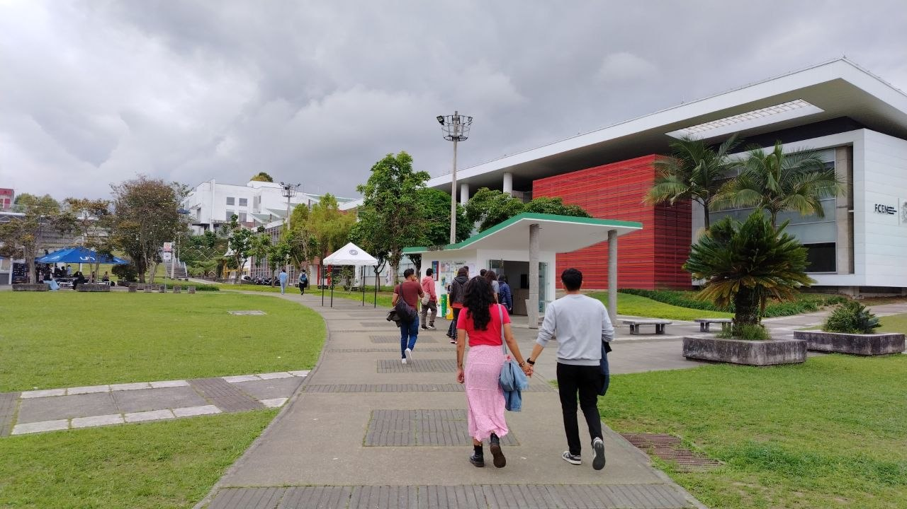
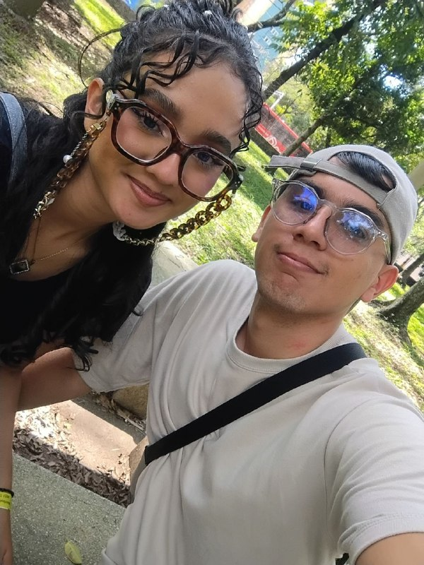
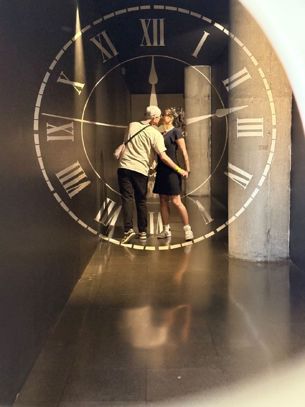
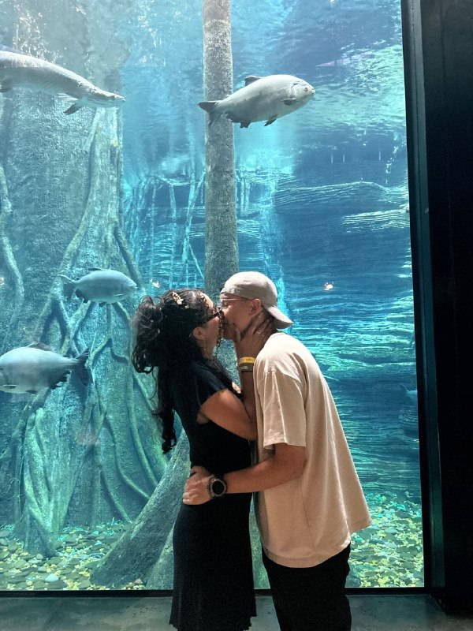

02 — Cumpleaños
¡Feliz
cumpleaños,
Vanessa!
Un día para celebrarte, y una excusa más para decirte cuánto te amo.
03 — Recuerdos
Mis momentos favoritos tienen algo en común: tú
Vamos a recordar un poco lo que ha sido este último año.
-
La MEJOR maestra de ceremonias (22/11/26)
-
El peinado más icónico de Manizales (19/11/26)
-
La mejor vista de la ciudad, tú con ella de fondo (19/11/26)
-

De la mano siempre juntos (18/11/26)
-

Por mas universidades y lugares por conocer juntos (11/11/26)
-

A tu lado, el flujo del tiempo simplemente se hace imperceptible (11/11/26)
-

Nunca seran sucientes besos (11/11/26)
04 — Carta
Unas palabras para ti
Querida Vanessa,
[TEXTO PROVISIONAL] Este espacio está reservado para tu carta. Borra estas líneas y escribe aquí lo que quieras decirle.
[TEXTO PROVISIONAL] Cada párrafo aparecerá con suavidad cuando ella llegue a él, así que puedes escribir tantos como necesites.
[TEXTO PROVISIONAL] Escríbela con tu propia voz y con tus propios recuerdos: esa es la parte que nadie más puede poner.
05 — Un regalo
Invitación especial
Un regalo para nosotros
Vale por una cita especial
- Plan
- [Escribe aquí el plan]
- Fecha
- [Escribe aquí la fecha]
- Una frase
- [Escribe aquí una frase sorpresa]
[Escribe aquí el mensaje que se revela al reclamar]
Gracias por llegar hasta aquí.
Cada página de esta historia lleva tu nombre, y las mejores todavía las estamos escribiendo.
Continuará…